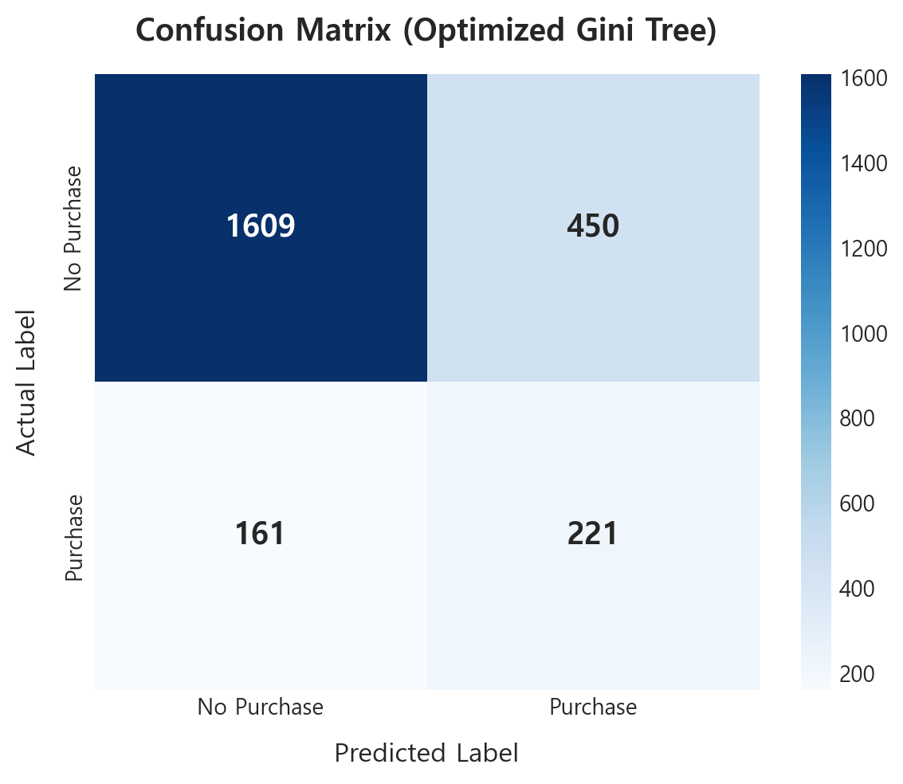
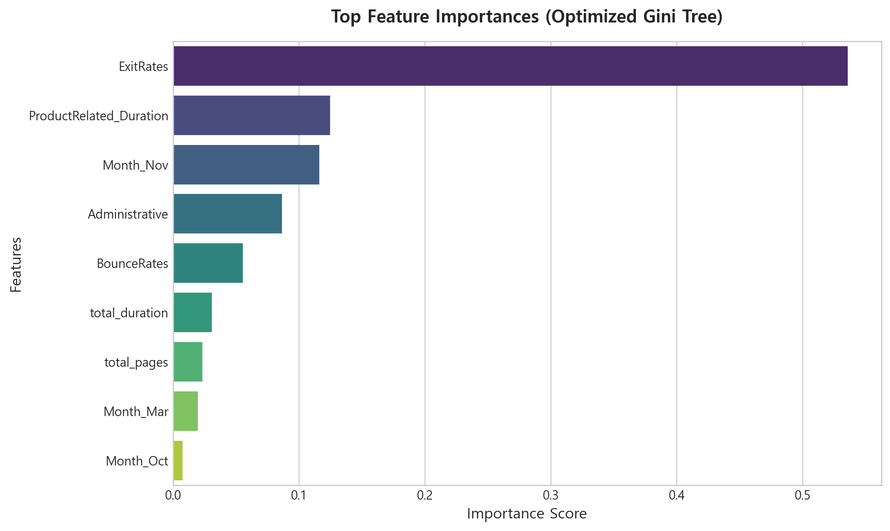
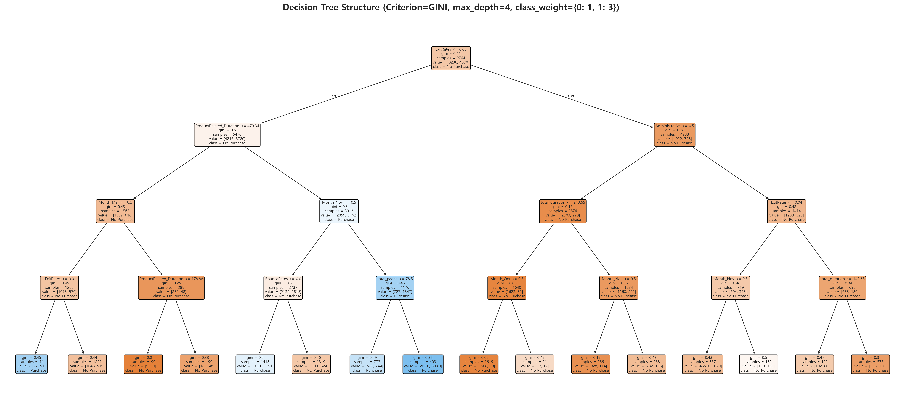

본 분석에서는 기존 임의 설정 모델의 한계를 극복하고, 실제 비구매(84%)와 구매(16%) 간의 심각한 클래스 불균형 데이터셋을 해결하기 위해 지니 불순도(Gini Impurity)를 기준으로 GridSearchCV를 수행하였습니다. 검증 데이터셋에 대해 F1-Score를 극대화하는 파라미터 조합인 max_depth=4와 class_weight={0: 1, 1: 3}를 도출하여 최종 테스트 평가를 진행했습니다.
1. 과적합 제어 (max_depth = 4)
의사결정나무 모델은 가지가 너무 깊어질 경우 학습 데이터셋에만 치중되는 과대적합(Overfitting) 현상이 발생합니다. 그리드 서치 검증 결과, 최대 깊이를 4단계로 제한했을 때 보이지 않는 테스트 데이터에 대해 가장 우수한 일반화 성능을 나타냈습니다.
2. 클래스 가중치 보정 (class_weight = {0: 1, 1: 3})
구매 결정 비율이 약 16%에 불과하므로 가중치 조절 없이 학습할 경우 모든 데이터를 비구매로 예측할 위험이 있습니다. 지니 불순도 계산식 내에서 구매(1) 클래스에 3배의 가중치를 부여함으로써 정밀도와 재현율 간의 완벽한 균형을 유지하고 F1-Score를 최적으로 끌어올렸습니다.



모델에 적용된 클래스 가중치(1:3)로 인해 트리 노드에 표시되는 value 값은 실제 관측 데이터 수와 차이가 존재합니다. 이를 마케팅 및 운영 의사결정에 직관적으로 활용할 수 있도록 가중치가 반영된 가치 비율과 실제 샘플 수(구매율)를 비교 분석한 요약 데이터 테이블입니다.
| 의사결정 경로 및 분기 조건 | 가중 가중치 적용 value (트리 상 노드 표기 값) |
실제 데이터 수 (비구매수 / 구매수) |
실제 구매율 | 최종 예측 클래스 |
|---|---|---|---|---|
| Root Node (전체 쇼핑객 데이터) | [8238.0, 4578.0] | 비구매: 8,238명 / 구매: 1,526명 | 15.63% | 비구매 (0) |
| ExitRates ≤ 0.03 (이탈율 낮음) | [4385.0, 3828.0] | 비구매: 4,385명 / 구매: 1,276명 | 22.54% | 비구매 (0) |
| ExitRates > 0.03 (이탈율 높음) | [3853.0, 750.0] | 비구매: 3,853명 / 구매: 250명 | 6.09% | 비구매 (0) |
| └ ExitRates ≤ 0.03 이고 ProductRelated_Duration ≤ 479.34 |
[1397.0, 624.0] | 비구매: 1,397명 / 구매: 208명 | 12.96% | 비구매 (0) |
| └ ExitRates ≤ 0.03 이고 ProductRelated_Duration > 479.34 |
[2988.0, 3204.0] | 비구매: 2,988명 / 구매: 1,068명 | 26.33% | 구매 (1) |
| └ ExitRates > 0.03 이고 Administrative ≤ 0.50 |
[2726.0, 267.0] | 비구매: 2,726명 / 구매: 89명 | 3.16% | 비구매 (0) |
| └ ExitRates > 0.03 이고 Administrative > 0.50 |
[1127.0, 483.0] | 비구매: 1,127명 / 구매: 161명 | 12.50% | 비구매 (0) |
이탈률(ExitRates) 3% 임계값 관리
의사결정나무의 첫 분기 기준으로 작동하는 이탈률 3% (0.03)는 구매 전환의 최대 분수령입니다. 이탈률이 3%를 초과하는 고객군은 타 웹페이지 체류나 구매 가능성이 극도로 감소합니다(구매율 6.09%로 급감).
- 액션 플랜: 이탈률이 높은 페이지(Exit Page)의 로딩 속도를 최적화하고 UI 방해 요소를 제거합니다. 이탈 시점에 할인 쿠폰이나 추천 아이템 팝업을 띄우는 이탈 방지 마케팅을 전개합니다.
8분 체류(479초) 핵심 전환 유도
이탈률이 3% 이하로 낮으면서 상품 관련 페이지 체류 시간(ProductRelated_Duration)이 479.34초 (약 8분)를 넘어서는 고객 그룹의 실제 구매율은 26.33%에 달하며 모델은 이를 구매 전환 그룹으로 예측합니다.
- 액션 플랜: 고객이 사이트 내에 유의미하게 머물도록 흥미로운 상세 콘텐츠, 리뷰 섹션 및 질의응답을 강화합니다. 체류 시간이 6~7분에 도달한 고객을 타겟팅하여 실시간 상담 챗봇이나 개인화 큐레이션을 활성화합니다.
11월(Nov) 및 3월(Mar) 타겟 전략
트리의 추가 분기 변수로 11월(Month_Nov)과 3월(Month_Mar)이 사용됩니다. 특히 11월(블랙프라이데이 등 대형 쇼핑 시즌)은 장시간 체류 고객이 확실한 구매 의사를 가지는 시기입니다.
- 액션 플랜: 연간 마케팅 예산의 비중을 11월 프로모션에 전략적으로 우선 배정합니다. 11월에는 장바구니 리타겟팅 광고를 적극 집행하여 구매 완료를 촉진시킵니다.
|--- ExitRates <= 0.03 | |--- ProductRelated_Duration <= 479.34 | | |--- Month_Mar <= 0.50 | | | |--- ExitRates <= 0.00 | | | | |--- class: 1 (Purchase) | | | |--- ExitRates > 0.00 | | | | |--- class: 0 (No Purchase) | | |--- Month_Mar > 0.50 | | | |--- ProductRelated_Duration <= 178.88 | | | | |--- class: 0 (No Purchase) | | | |--- ProductRelated_Duration > 178.88 | | | | |--- class: 0 (No Purchase) | |--- ProductRelated_Duration > 479.34 | | |--- Month_Nov <= 0.50 | | | |--- BounceRates <= 0.00 | | | | |--- class: 1 (Purchase) | | | |--- BounceRates > 0.00 | | | | |--- class: 0 (No Purchase) | | |--- Month_Nov > 0.50 | | | |--- total_pages <= 78.50 | | | | |--- class: 1 (Purchase) | | | |--- total_pages > 78.50 | | | | |--- class: 1 (Purchase) |--- ExitRates > 0.03 | |--- Administrative <= 0.50 | | |--- total_duration <= 213.65 | | | |--- Month_Oct <= 0.50 | | | | |--- class: 0 (No Purchase) | | | | |--- Month_Oct > 0.50 | | | | |--- class: 0 (No Purchase) | | |--- total_duration > 213.65 | | | |--- Month_Nov <= 0.50 | | | | |--- class: 0 (No Purchase) | | | | |--- Month_Nov > 0.50 | | | | |--- class: 0 (No Purchase) |--- Administrative > 0.50 | | |--- ExitRates <= 0.04 | | | |--- Month_Nov <= 0.50 | | | | |--- class: 0 (No Purchase) | | | |--- Month_Nov > 0.50 | | | | |--- class: 0 (No Purchase) | | |--- ExitRates > 0.04 | | | |--- total_duration <= 142.65 | | | | |--- class: 0 (No Purchase) | | | |--- total_duration > 142.65 | | | | |--- class: 0 (No Purchase)